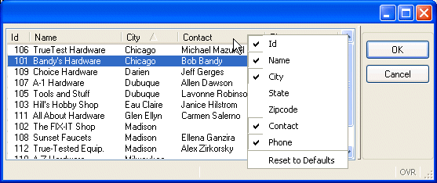

Summary:
Unlike the previous programs, this example displays multiple customer records at once. The program defines a program array to hold the records, and displays the records in a form containing a TABLE and a screen array. The user can scroll through the records in the table, sort the table by a specific column, and hide or display columns.
This example is written as a library function so it can be used in multiple programs. This type of code re-use maximizes your programming efficiency. As you work through the examples in the other tutorial lessons, look for additional candidates for library functions.

Display on Windows platform
In the illustration, the table is sorted by City. A right mouse click has displayed a dropdown list of the columns, with check boxes allowing the user to hide or show a specific column. After the user validates the row selected, the store number and store name are returned to the calling function.
To implement this type of scrolling display, the example must:
The function will use the DISPLAY ARRAY statement to display all the records in the program array into the rows of the screen array. Typically the program array has many more rows of data than will fit on the screen.
A screen array is usually a repetitive array of fields in the LAYOUT section of a form specification, each containing identical groups of screen fields. Each “row” of a screen array is a screen record. Each “column” of a screen array consists of fields with the same item tag in the LAYOUT section of the form specification file. You must declare screen arrays in the INSTRUCTIONS section.
The TABLE container in a form defines the presentation of a list of records, bound to a screen array. When this layout container is used with curly braces defining the container area, the position of the static labels and item tags is automatically detected by the form compiler to build a graphical object displaying a list of records.
The first line of the TABLE area contains text entries defining the column titles. The second line contains field item tags that define the columns of the table receiving the data. This line is repeated to allow the display of multiple records at once.
The user can sort the rows displayed in the form table by a mouse-click on the title of the column that is to be used for the sort. This sort is performed on the client side only. The columns and the entire form can be stretched and re-sized. A right-mouse-click on a column title displays a dropdown list-box of column names, with radio buttons allowing the user to indicate whether a specific column is to be hidden or shown.
You must declare a screen array in the INSTRUCTIONS section of the form with the SCREEN RECORD keyword. You can reference the names of the screen array in the DISPLAY ARRAY statement of the program.
| Module custmain.4gl |
|
In order to fit on the page, the layout section of the form is truncated, not displaying the city and state columns.
01 The custdemo schema will be used by the compiler to determine
the data types of the form fields.
06 contains the titles for the columns in the TABLE.
07 thru
12 define the display area for the screen records. These
rows must be identical in a TABLE. (The fields for city and state are
indicated by .... so the layout will fit on this page.)
21 thru
29 In the ATTRIBUTES section the field
item tags are linked to the
field description. Although there are multiple occurrences of each item
tags in the form, the
description is listed only once for each unique field item tag.
32 defines the screen
array in the INSTRUCTIONS section. The screen
record must contain the same number of elements as the records in
the TABLE container. This example defines the screen record with all fields
defined with the customer prefix, but you can list each field name
individually.A program array is an ordered set of elements all of the same data type. You can create one-, two-, or three-dimensional arrays. The elements of the array can be simple types or they can be records.
Arrays can be:
All elements of static arrays are initialized even if the array is not used. Therefore, defining huge static arrays may use a lot of memory. The elements of dynamic arrays are allocated automatically by the runtime system, as needed.
Example of a dynamic array of records definition:
01DEFINE cust_arr DYNAMIC ARRAY OF RECORD02store_num LIKE customer.store_num,03city LIKE customer.city04END RECORD
This array variable is named cust_arr; each element of the array contains the members store_num and city. The size of the array will be determined by the runtime system, based on the program logic that is written to fill the array. The first element of any array is indexed with subscript 1. You would access the store_num member of the 10th element of the array by writing cust_arr[10].store_num.
To load the program array in the example, you must retrieve the values from the result set of a query and load them into the elements of the array. You must DECLARE the cursor before the FOREACH statement can retrieve the rows.The FOREACH statement is equivalent to using the OPEN, FETCH and CLOSE statements to retrieve and process all the rows selected by a query, and is especially useful when loading arrays.
01DECLARE custlist_curs CURSOR FOR02SELECT store_num, city FROM customer03CALL cust_arr.clear()04FOREACH custlist_curs INTO cust_rec.*05CALL cust_arr.appendElement()06LET cust_arr[cust_arr.getLength()].* = cust_rec.*07END FOREACH
The FOREACH statement shown above:
The DISPLAY ARRAY statement lets the user view the contents of an array of records, scrolling through the display, but the user cannot change them.
When using a static array, the number of rows to be displayed is defined by the COUNT attribute. If you do not use the COUNT attribute, the runtime system cannot determine how much data to display, and so the screen array remains empty.
When using a dynamic array, the number of rows to be displayed is defined by the number of elements in the dynamic array; the COUNT attribute is ignored.
01 DISPLAY ARRAY cust_arr TO sa_cust.*This statement will display the program array cust_arr to the form fields defined in the sa_cust screen array of the form.
By default, the DISPLAY ARRAY statement does not terminate until the user accepts or cancels the dialog; the Accept and Cancel actions are predefined and display on the form. Your program can accept the dialog instead, using the ACCEPT DISPLAY instruction.
When the user accepts or cancels a dialog, the ARR_CURR built-in function returns the index (subscript number) of the row in the program array that was selected (current).
| Module cust_lib.4gl |
|
Notes:
05 thru
13 define a local program
array, cust_arr.14 thru 22 define a local
program record, cust_rec. This
record is used as temporary storage for the row data retrieved by
the FOREACH loop in line 42.23 and 24
define local variables to hold the store number and name
values to be returned to the calling function.25 defines a variable
to store the value of the
program array index.27 opens a window with the form containing the array.29 thru
38 DECLARE
the cursor custlist_curs to retrieve
the rows from the customer table. 40 sets the variable idx to
0, this variable will be incremented in the FOREACH loop.41 clear the dynamic array.42 uses FOREACH to retrieve each row from the
result set into the program record, cust_rec. 43 thru 44 are
executed for each row that is retrieved by the FOREACH. They append
a new element to the array cust_arr, nd transfer the data from the
program record into new element, using the method getLength to
identify the index of the element. When the
FOREACH statement has retrieved all the rows the
cursor is
closed and the FOREACH is exited.47 and 48
Initialize the variables used to return the customer number and
customer name.50 thru 57 If
the length of the cust_arr array is greater than
0, the FOREACH
statement did retrieve some rows. 52 DISPLAY ARRAY
turns control over to the user, and waits for the user to accept or cancel the dialog. 52 The INT_FLAG variable is tested to check if
the user validated the dialog.53 If the user has validated the dialog, the built-in
function ARR_CURR
is used to store the index for the program
array element the
user had selected (corresponding to the highlighted row in the screen
array) in the variable curr_pa.54 and
55 The variable curr_pa is used to retrieve the current values of
store_num and store_name from the program array and
store them in the variables ret_num and
ret_name.59 closes the window.60 returns ret_num and ret_name to
the calling function.Since this is a function that could be used by other programs that reference the customer table, the function will be compiled into a library. The library can then be linked into any program, and the function called. The function will always return store_num and store_name. If the FOREACH fails, or returns no rows, the calling program will have a store_num of zero and a NULL store_name returned.
The function is contained in a file named cust_lib.4gl. This file would usually contain additional library functions. To compile (and link, if there were additional .4gl files to be included in the library):
fgl2p -o cust_lib.42x cust_lib.4gl
Since a library has no MAIN function, we will need to create a small stub program if we want to test the library function independently. This program contains the minimal functionality to test the function.
| Module cust_stub.4gl |
|
Notes:
04 and
05 define variables to hold the values returned by the
display_custarr function.07 thru 09
are
required simply for the test program, to set the program up and connect to the
database.11 calls the library function display_custarr.13 displays the returned values to standard
output for the purposes of the test.Now we can compile the form file and the test program, and link the library, and then test to see if it works properly.
fglform manycust.per
fgl2p -o test.42r cust_stub.4gl cust_lib.42x
fglrun test.42r
The previous example retrieves all the rows from the customer table into the program array prior to the data being displayed by the DISPLAY ARRAY statement. Using this full list mode, you must copy into the array all the data you want to display. Using the DISPLAY ARRAY statement in "paged" mode allows you to provide data rows dynamically during the dialog, using a dynamic array to hold one page of data.
The following example modifies the program to use a SCROLL CURSOR to retrieve only the store_num values from the customer table. As the user scrolls thru the result set, statements in the ON FILL BUFFER clause of the DISPLAY ARRAY statement are used to retrieve and display the remainder of each row, a page of data at a time. This helps to minimize the possibility that the rows have been changed, since the rows are re-selected immediately prior to the page being displayed.
A "page" of data is the total number of rows of data that can be displayed in the form at one time. The length of a page can change dynamically, since the user has the option of re-sizing the window containing the form. The run-time system automatically keeps track of the current length of a page.
The ON FILL BUFFER clause feeds the DISPLAY ARRAY instruction with pages of data. The following built-in functions are used in the ON FILL BUFFER clause to provide the rows of data for the page:
The statements in the ON FILL BUFFER clause of DISPLAY ARRAY are executed automatically by the runtime system each time a new page of data is needed. For example, if the current size of the window indicates that ten rows can be displayed at one time, the statements in the ON FILL BUFFER clause will automatically maintain the dynamic array so that the relevant ten rows are retrieved and/or displayed as the user scrolls up and down through the table on the form. If the window is re-sized by the user, the statements in the ON FILL BUFFER clause will automatically retrieve and display the new number of rows.
The AFTER DISPLAY block is executed one time, after the user has accepted or canceled the dialog, but before executing the next statement in the program. In this program, the statements in this block determine the current position of the cursor when user pressed OK or Cancel, so the correct store number and name can be returned to the calling function.
In the first example, the records in the customer table are loaded into the program array and the user uses the form to scroll through the program array. In this example, the user is actually scrolling through the result set created by a SCROLL CURSOR. This SCROLL CURSOR retrieves only the store number, and another SQL SELECT statement is used to retrieve the remainder of the row as needed.
| Module cust_lib2.4gl |
|
Notes:
16 thru
19 define some new variables
to be used, including
cont_disp to indicate whether the function should continue.24 uses an embedded SQL statement to store the
total number of rows in the customer table in the variable rec_count.25 thru
27 If the total number of rows is zero, function
returns immediately 0 and NULL.29 thru
33 contain the text of an SQL SELECT
statement to
retrieve values from a single row in the customer table. The ?
placeholder will be replaced with the store number when the statement is
executed. This text is assigned to a STRING
variable, sql_text.34 uses the SQL PREPARE
statement to convert the STRING
into an executable statement, rec_all. This statement
will be executed when needed, to populate the rest of the values in the row of
the program array.36 thru
37 DECLARE
a SCROLL CURSOR num_curs to
retrieve only the store number from the customer table.38 opens the SCROLL CURSOR
num_curs.40 and
41 call the DISPLAY ARRAY
statement, providing the COUNT to let the statement know the total number of rows in the SQL result
set.43 thru
62 contain the logic for the ON FILL BUFFER clause
of the DISPLAY ARRAY
statement. This control block will be executed automatically whenever a
new page of data is required.44 uses the built-in
function to get the offset for the page, the starting point for
the retrieval of rows, and stores it in the variable
ofs.45 uses the built-in
function to get the page length, and stores it in the variable
len.46 thru
62 contain a FOR
loop to populate each row in the page with values from the customer
table. The variable i
is incremented to populate successive rows. The first value of i is
1.48 and 49 use
the SCROLL CURSOR num_curs
with the syntax FETCH
ABSOLUTE <row_number> to
retrieve the store number from a specified row in the result
set, and to store it in row i of the program
array. Since i was started at 1, the
following calculation is used to determine the row number of the row to be retrieved:
(Offset for the page) PLUS i MINUS 1
Notice that rows 1 thru (page_ length) of the program array are filled each time a new page is required.
50 and
51 execute the prepared
statement rec_all to retrieve the rest of the values for row i in the program
array,
using the store number retrieved by the SCROLL CURSOR.
Although this statement is within the FOR
loop, it was prepared
earlier in
the program, outside of the loop, to avoid unnecessary re-processing each
time the loop is executed.53 thru
61 test whether fetching the entire row was
successful. If not, a message is displayed to the user, and the
CONTINUE FOR instruction continues the FOR loop with the next iteration.64 thru
72 use an AFTER DISPLAY
statement to get the row number of the row in the array that the
user had selected. If the dialog was cancelled, ret_num is set to 0 and ret_name
is set to blanks. Otherwise the values of ret_num and ret_name
are set based on the row number. The row number in the SCROLL CURSOR
result set does not correlate directly to the program
array number, because the program
array was filled starting at row 1 each
time. So the following calculation is used to return the correct row
number of the program array:
(Row number returned by ARR_CURR) MINUS
(Offset for the page) PLUS 1
74 is the end of the DISPLAY ARRAY
statement. 76 and
77 close and free the cursor.78 frees the prepared statement.81 closes the window.82 returns the values of the variables
ret_num and ret_name to the calling function.